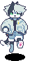

jay wright is a tuxedo cat who works as a delivery boy. he's mute, although his friends all know asl (aerie sign language).
jay is currently trying to get a foothold in the world fresh away from her father. because of her work, most of her time is spent on the road—just her, her bike, and the rearview mirrors. it hasn't done much to soothe her persistent feelings of isolation.
to distract herself, he keeps his head down and his focus on his work—or he tries to, at least, despite the fact that c.c. keeps dragging him into strange situations and that that weird... thing... keeps following him around. it's all really none of his business. (c.c. could stand to learn a thing or two from that.)

jay's fashion sense favors practicality over style. his canonical outfit (right) is a light blue puffy coat with a neon orange lining, a black shirt, and a pair of cuffed jean shorts.
when on the job, jay wears a pair of goggles (so his eyes don't dry out from the wind) and a red scarf (uniform requirement).